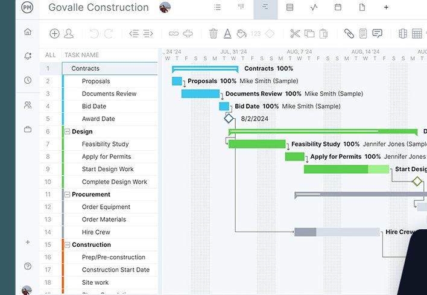

ProjectManager Review: Microsoft Project's Manners, Without the Desktop
6.2 Sensible Score, out of 10
Ratings by business type
Best suited to: construction, engineering, manufacturing and IT delivery teams running waterfall projects, and any firm that exchanges schedules with Microsoft Project users.

Sensible Stack: Streamlining business, whatever your size
Review status: TRIALLED IT. A full 30 day trial in 2025, tested against waterfall project work. It did not convert to a paid plan, and the reason is in this review.
The short answer
ProjectManager is the only tool in this series that thinks the way a traditional project manager thinks. Its Gantt chart is the real thing: all four dependency types, critical path, baselines, and the party trick nobody else here does, importing and exporting Microsoft Project files in both directions, so the traditionalists outside the platform still get their MPP. The catch is commercial, not technical: there is no free plan at all, so the meter starts at $15 per user the moment the trial ends.
What it is
ProjectManager (projectmanager.com) is online project software built around the Gantt chart, with sheet, board, list and calendar views of the same tasks, plus timesheets, workload management, dashboards and portfolio views on the higher tier. Its natural habitat is construction, engineering, manufacturing and IT delivery: industries where the schedule is a commitment, not a mood board.
Where it wins
- The MPP round trip. Import a Microsoft Project file and the assignees and baselines come with it; export back to MPP for the client or manager who still lives in Project desktop. In a series full of tools that treat your schedule as a hostage, this is the standout feature, and our reviewer liked it most of anything in the product
- A Gantt with the full grammar: finish to start, start to start, finish to finish and start to finish dependencies, with lag, a critical path filter, and baselines with variance reports. One independent roundup calls its Gantt some of the strongest in the market, and a G2 reviewer line says it plainly: better than MS Project for a lot less money. G2 overall is 4.4 out of 5
- Built for waterfall without apology. While the rest of this series apologises for deadlines and calls everything a workflow, ProjectManager is aimed squarely at traditional planning, and engineering and construction reviewers are its happiest customers
- Timesheets, workload and dashboards in the same house, on Business
Where it frustrates
- No free plan. The trial is 30 days, and then it is $15 per user per month on Team or $28 on Business, billed annually. Every other serious tool in this series lets a solo user live on a free tier while deciding. ProjectManager's paywall arrives on day 31, and it is precisely what stopped our reviewer progressing: per seat pricing, committed annually, for a tool he was still evaluating
- The caps. Team allows up to 10 users and 20 projects; Business up to 100 projects. Fine for its market, but count your projects before you fall in love
- The UX/UI is workmanlike rather than lovely. Set beside monday.com it feels like the older generation it is replacing, and the integrations catalogue is thinner than ClickUp's or Asana's
- Agile only teams will find it stiff. It does boards, but its heart is in the schedule
The AI, and its price tag
ProjectManager's AI sits in the background, drafting and summarising help rather than a headline act, and the honest summary is that nobody buys this tool for its AI. They buy the scheduling engine. Our duplication warning therefore barely stirs: there is little here that doubles up a general AI subscription, and equally little AI magic to write home about. Check the current packaging on its site if AI features matter to you; they were not the story at the time of writing, November 2026.
Reporting and dashboards
A quiet strength. Real time dashboards were among the features G2 reviewers praised most, and Business adds portfolio views and workload across projects, so a manager can show executives the state of several jobs on one page. It is reporting in the traditional mould: status, variance, cost and time, presented plainly rather than beautifully.
Pricing
Checked November 2026. No free plan, 30 day free trial. Team $15 per user per month billed annually (up to 10 users, 20 projects). Business $28 (up to 100 projects, adds timesheets, workload, portfolios, automation). Enterprise by quote. Monthly billing exists, including for a single user, which matters for the exception below.
That Solo score carries a footnote. A solo waterfall project manager who already knows they need MPP grade scheduling is a recognised fit for this tool, and single user monthly billing exists for exactly that person. The low score is for the casual solo browser, who gets no free tier to grow into the idea.
Verdict
The most honest tool in this series about what it is. If your projects have baselines, dependencies and a client who wants the MPP file, ProjectManager earns its $15 a seat. If you are a solo user still shopping, its missing free plan means the trial clock is ticking from day one, so arrive with a real project in hand and test like you mean it.
Try it: Visit ProjectManager
Research note: Pricing, plan caps and MPP behaviour checked against vendor pages, G2 and published comparisons, November 2026. Trial experience is the author's own, 2025.